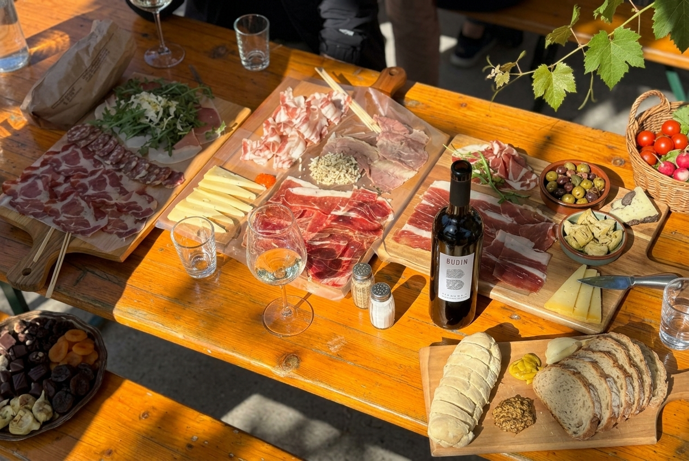

Verifica in corso
Ora di Trieste
Stiamo controllando le aperture

Buon cibo, il vino della nostra terra e il tempo giusto per stare insieme.
Prima di partire
Le aperture seguono il ritmo della cantina e della stagione. Qui trovi sempre date e orari aggiornati prima di metterti in viaggio.
Stiamo controllando le aperture
Calendario
Periodi e orari programmati per le prossime aperture dell’osmiza.